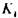
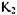
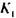
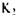
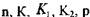
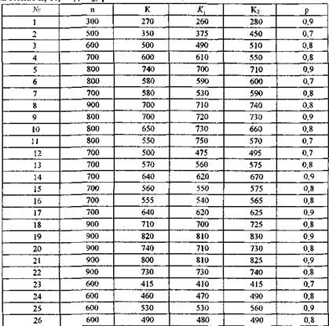

ЗАВДАННЯ ДЛЯ САМОСТІЙНОЇ РОБОТИ № 4
При реконструкції комп'ютерного центру було замінено п комп'ютерів. Яка імовірність того, що:
а) працюватиме К комп'ютерів;
б) це меншеі не більшекомп'ютерів;
в) не менше якщо імовірність того, що працюватиме один будь-який комп'ютер рівна Р;
г) не більше;
д) знайти найімовірніше число комп'ютерів, що працюватимуть, та його
імовірність.
Значення взяти з таблиці:
